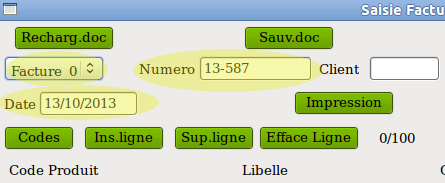
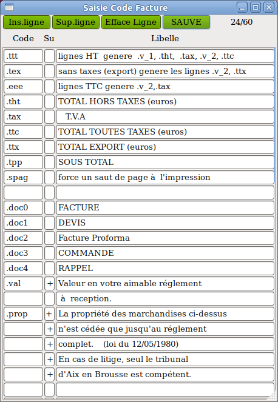

| ======= Ligne déroulante
Facture_0, Devis_1, etc Choisir dans la liste le type de document à saisir. Les choix possible sont: Facture_0 Devis_1 Proforma_2 Command_3 Xxx_4 Ce choix a pour but d'afficher dans l'impression le type du document. Il n'a aucune influence sur la saisie. Le libellé imprimé est défini dans la fenêtre 'Codes' (voir plus loin). |
 |
| Dans cette fenêtre on retrouve
pour mémoire les codes que l'on vient d'étudier. .ttt , .eee, .tex, .spag ==Codes .tht, .tax, .ttc, .ttx, .tpp Chacun de ces codes a un libellé que l'utilisateur peut modifier à son grès. Ces libellés seront ceux qui seront générés dans la facture. ==Codes .doc0, .doc1, .doc2, .doc3, .doc4 Chacun de ces codes a un libellé que l'utilisateur peut modifier à son grès. Il concerne le type de documents saisis (facture, devis,etc) sélectionné par la ligne déroulante du début de la saisie. Ils sont utilisés pour l'impression finale. exemples Devis_1 c'est le libellé de la ligne .doc1 qui sera choisi. Xxx_4 c'est le libellé de la ligne .doc4 qui sera choisi. IMPORTANT Tous les codes précédents de cette fenêtre ne doivent pas être modifiés, seuls leur libellé peuvent l'être. ==Codes .xxx Les autres lignes sont à la disposition de l'utilisateur pour mémoriser des lignes de libellés qu'il utilise souvent dans sa facture. Il choisit un code qui doit commencer obligatoirement par '.'. Il saisit son libellé. Si le libellé se poursuit sur la ligne suivante, il faut saisir '+' dans la colonne suite. REMARQUE Il existe une autre possibilité d'imprimer systèmatiquement un texte quelconque (mention légales ou autres) en l'incluant dans le fichier de commande de la mise en page. IMPORTANT Après des modifications dans la fenêtre 'Codes' ne pas oublier le clic sur le bouton 'SAUVE' pour pouvoir les conserver. |
 |